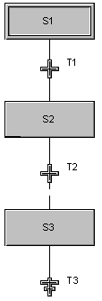

Overriding Reset (R) Qualifier for resetting stored actions
To stop the evaluation of a stored type of action, an action with the reset action qualifier is generally used. Any stored action that is active must be reset before a new value can be stored in that destination with predictable results.
How you reset a stored action depends on the type of stored action it is (either Boolean, non-Boolean, or assignment). To reset a stored Boolean or non-Boolean action, you define a Boolean or non-Boolean action with a reset qualifier that resets either the Boolean parameter (for a Boolean action) or the block (for a non-Boolean action). For example, suppose S1 in the following figure of an SFC contains a stored Boolean action, A1.

A1 references a Boolean parameter called PARAM1. When the step S1 becomes active, the action A1 becomes active and the parameter PARAM1 is set to TRUE. In summary, you have an action A1 with:
A1 stays active after the step becomes inactive because it is a stored action. Therefore, the parameter, PARAM1, continues to be set to TRUE until you reset the action. To reset the action and the Boolean parameter, PARAM1, you must create a step with an action that has a reset qualifier. For example, if you wanted to reset the Boolean parameter, PARAM1, during step S3, you could define a Boolean action for step S3 that has a Reset action qualifier and uses PARAM1 for the action text. Then, when S3 becomes active, PARAM1 is reset. In summary, you would create an action with:
You can use this approach for either a Boolean or a non-Boolean action. However, to reset an assignment action, you must write the reset text differently. For example, suppose the same SFC contains a stored assignment action, A2, in step S1. When the step S1 becomes active, A2 becomes active and increments the parameter, PARAM2. In summary, you have an action A2 with:
The action stays active after the step becomes inactive because it is a stored action. Therefore, the parameter, PARAM2, continues to be incremented until you reset the action. To reset an assignment action, you must make the action inactive. You do this by setting the ACTIVE parameter to False. Therefore, you would create a non-stored action that sets 'S1/A2/ACTIVE' to False. For this example, you could use a Pulse (P) action qualifier. In summary, to reset the assignment action, A2, you would create an action with:
If there is a parallel divergence in your sequence, you must put the reset action in all of the paths of the parallel divergence to make sure that the action gets reset.